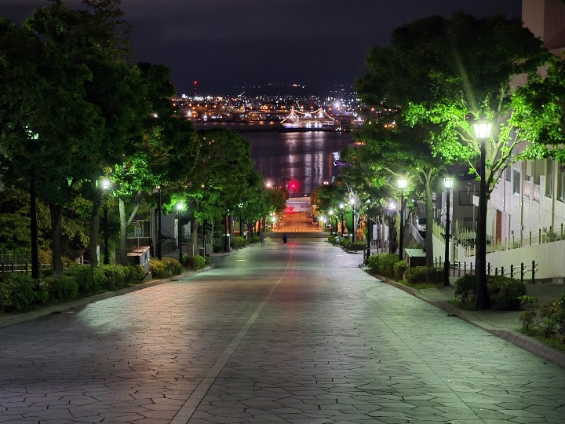
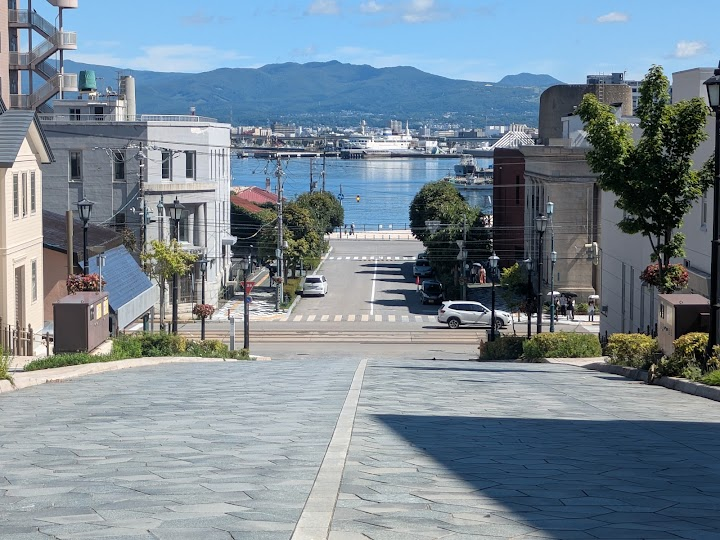
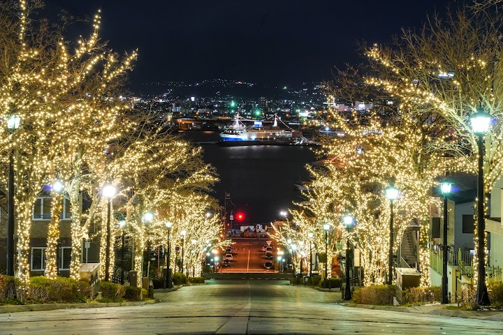
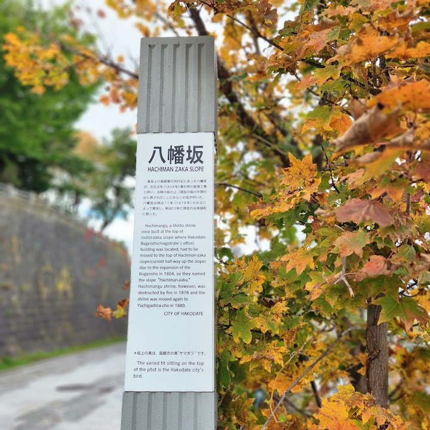
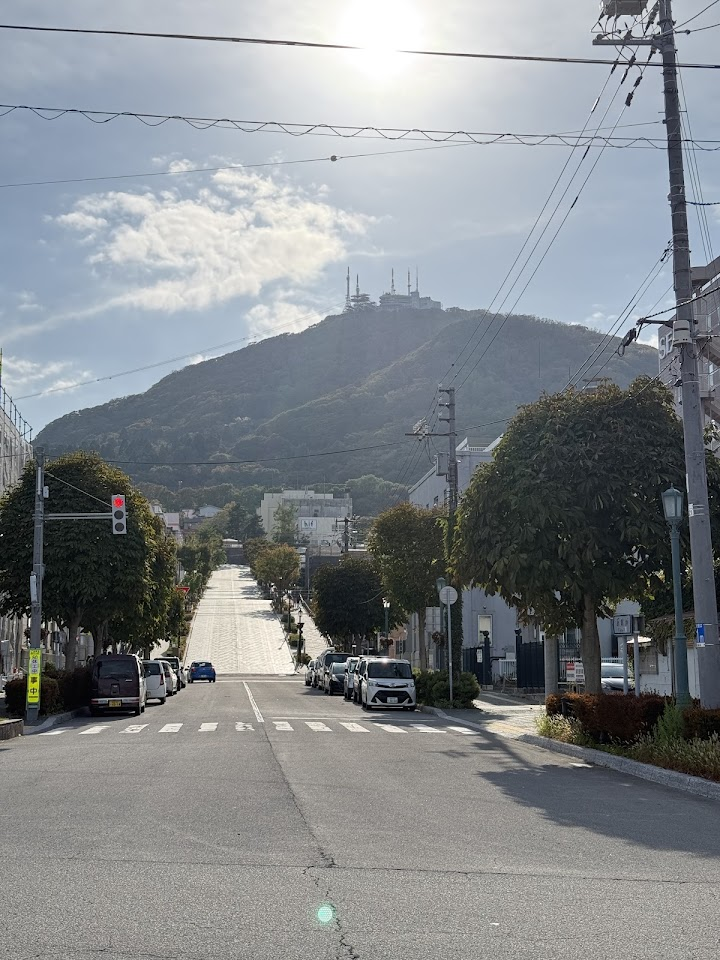

Hachimanzaka and Motomachi (suggested)
Hachimanzaka is a broad sloping street in Hakodate's Motomachi district, lined with old Western-style buildings and churches, with a classic view straight down to the harbour. It is great for a walk and for photos.
Open in Google Maps (street view, more photos and reviews there)






Visitor tips on finding it and getting there
Walking up and down 八幡坂 (Hachiman-Zaka Slope) in Hakodate during our summer road trip through southern Hokkaido was an absolute postcard-worthy highlight and offered one of the most iconic, unforgettable views of our entire journey. Located in the historic Motomachi district, accessing the slope after parking our rental car near the bay area was smooth and easy, making it a natural, essential stop as we explored the hillside streets on foot. Widely recognized as one of Japan's most beautiful streets, this long, tree-lined stone slope leads directly down toward the water, creating a stunning, p